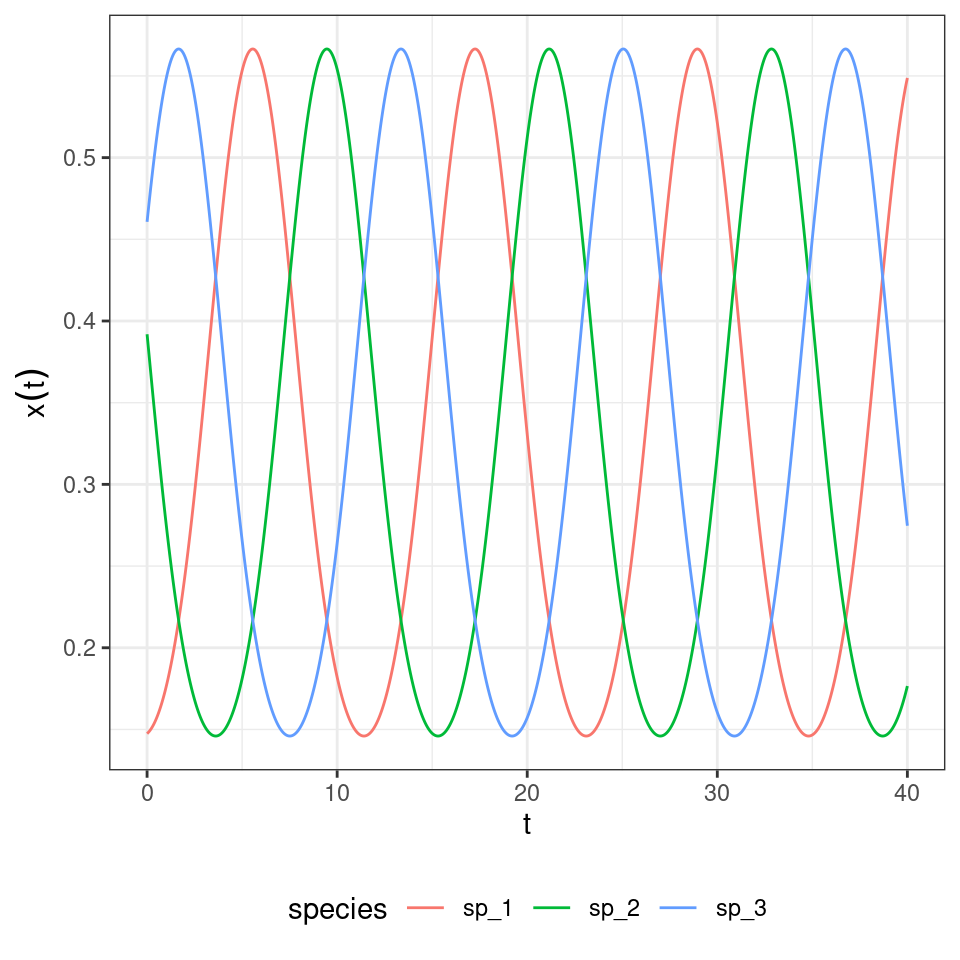
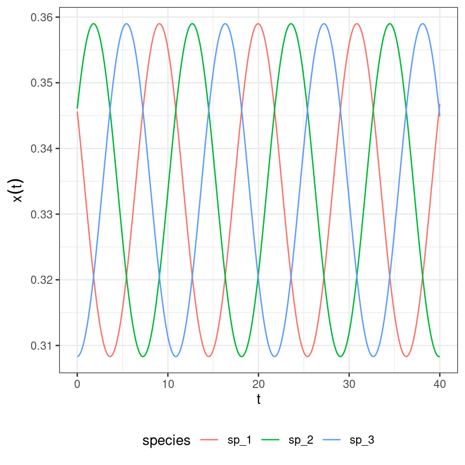
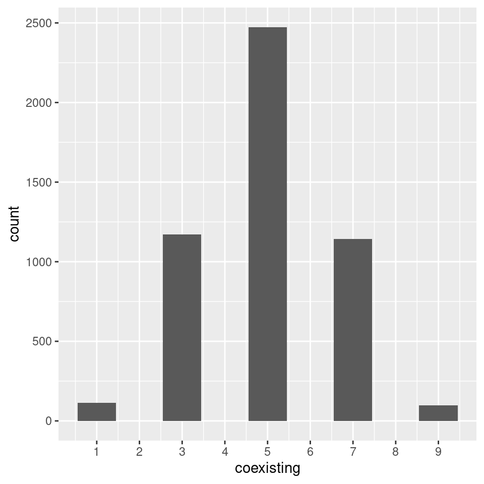
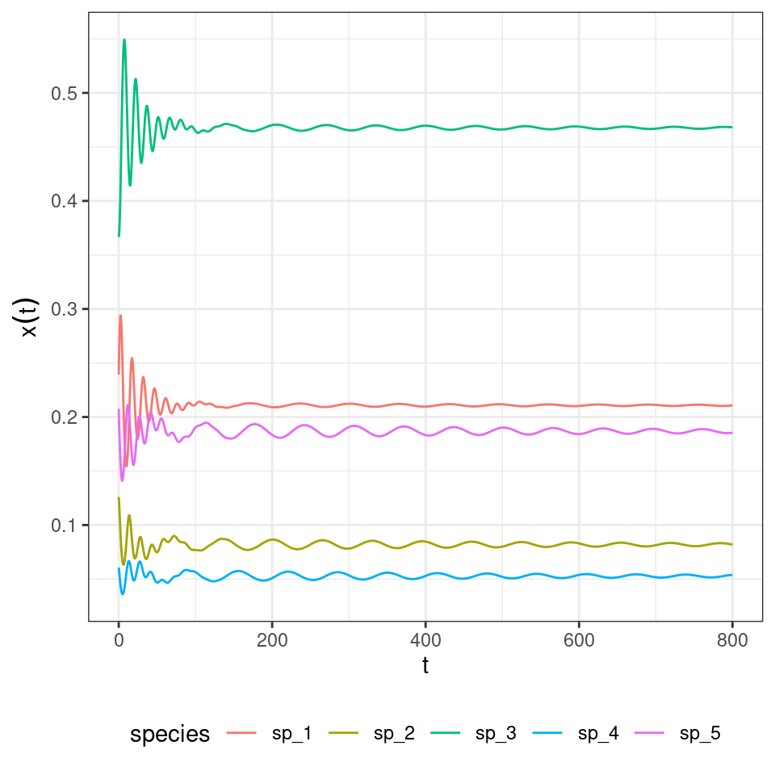

Lecture 7 Game theory and replicator dynamics
7.1 Game theory
We briefly introduce the study of mathematical models of games, and their relations to the GLV model. While the origin of game theory can be traced back to the 1700s, modern game theory started with von Neumann’s paper On the Theory of Games of Strategy, published in 1928, and with the subsequent 1944 book with Morgensten Theory of Games and Economic Behavior. John Nash’s paper (Nash 1950) introduced the notion of a Nash Equilibrium (NE), and proved that any non-cooperative game has at least one such equilibrium. Originally, game theory was studied by economists and mathematicians, but with a series of papers in the early 1970s, and the subsequent book Evolution and the Theory of Games (Maynard Smith 1982), John Maynard Smith showed how the same tools could be used to study evolutionary dynamics, introducing the influential concept of an Evolutionary Stable Strategy (ESS). Evolutionary game theory was greatly advanced through the introduction of the Replicator Equation (RE), which, as we will see later, has strong connection with the GLV model. For a detailaed introduction to evolutionary game theory see Hofbauer and Sigmund (1998).
History: John Maynard Smith (1920-2004)

Born in London, when he was at Eaton he decided to study (independently) the work of JBS Haldane. He set out to Cambridge to study engineering, and subsequently worked as an engineer designing military aircrafts. In 1947, he had a change of hearth and decided to study Drosophila genetics at U.C.L. under Haldane. In 1973, based on his interaction with George Price, he formalized the concept of “Evolutionarily Stable Strategy”, which became central to evolutionary game theory. His book Evolution and the Theory of Games (1982) was an immediate success and contributed to the birth of the field.
History: George R. Price (1922-1975)

One of the most remarkable characters in the history of biology, he was born in New York. He studied chemistry at U. Chicago, receiving a Ph.D. in 1946 (for work connected to the Manhattan Project). He went on to take a variery of jobs: teaching chemistry at Harvard, consulting at Argonne, researching at Bell Lab, writing popular science, working on medical research at U. Minnesota, and consulting for IBM on computer graphics.
In 1966, he was operated for a tumor, and the operation resulted in a partial paralysis. With the money from his medical insurance, he moved to the UK to start a new life.
Without any training in population genetics or statistics, he devised the Price equation, based on his readings of Hamilton’s papers on kin selection. This feat landed him a job at Galton Lab at UCL, despite his lack of credentials. His collaborations with Hamilton and Maynard-Smith led to the development of evolutionary game theory.
A strong atheist from an early age, in 1970 Price had a religious experience, converted to Christianity and started (inspired by his own equation) to perform acts of random kindness to complete strangers. Having given up all his possessions, and possibly due to his stopping of thyroid treatment, Price grew depressed and committed suicide in 1975.
The book The Price of Altruism: George Price and the Search for the Origins of Kindness (Oren Harman, 2010) narrates the incredible story of his life.
7.2 Two-player matrix games
We start by anayzing games in which two players face each other, each choosing one strategy out of a set. Importantly, we consider static games in which each player makes their decision without having knowledge of the decision of the other player. Player 1 chooses a pure strategy \(s_1\) from the set of pure strategies \(S_1\), while player 2 chooses \(s_2 \in S_2\). We call \(\pi_k (s_1, s_2)\) the payoff for player \(k\) when player 1 chooses \(s_1\) and player 2 \(s_2\). In a matrix game, we can arrange the payoffs for each player in a matrix. We call \(A\) the matrix of payoffs for player one and \(B\) that for player two.
7.2.1 Example: the prisoner’s dilemma
Two prisoners allegedly committed a crime, but the police do not have enough evidence to convict them. They therefore approach each prisoner separately, proposing a deal: if the prisoner confesses (“defect” the other prisoner), then their sentence will be reduced. In particular: i) if both confess (both “defect”), they are sentenced to 4 years in prison; ii) if one confesses (“defect”) and the other keeps quiet (“cooperate” with the other prisoner), then the one who has confessed is let free, and the other sentenced to 5 years; iii) if both keep quiet (“cooperate”), then they are both sentenced to two years of detention for some accessory crime.
In matrix form, we have (rows for pl 1 strategy C/D; cols for pl 2 strategy):
\[ A = \begin{pmatrix} -2 & -5\\ 0 & -4 \end{pmatrix} \quad B = \begin{pmatrix} -2 & -5\\ 0 & -4 \end{pmatrix} \]
What is the best strategy player 1 can play—without knowing whether player 2 will confess or not? If player 2 were to keep quiet, player 1 should confess and be let free; if player 2 confesses, on the other hand, player 1 should also confess and get a reduced sentence. As such, each player would rationally choose to confess, thereby getting sentenced to four years in prison; note that if they could trust the other player, they could cooperate to get a much reduced sentence.
The defect/defect is called a Nash Equilibrium: no player can improve their payoff by changing only their own strategy.
One of the most interesting problems in this area is the study of the evolution of cooperation. Here is a very minimal bibliography:
Key paper: Axelrod and Hamilton (1981)
The seminal paper in this area. Interestingly, it details the outcome of a computer-based tournament in which several programs iteratively play the prisoner’s dilemma against each other.
Key paper: Clutton-Brock (2009)
An opinionated review on cooperation between non-kin in animal societies. The opening “As Darwin appreciated, cooperative behaviour—actions adapted to assist others that involve costs to the fitness of participants—poses a fundamental problem to the traditional theory of natural selection” succinlty summarizes why the evolution of cooperation is such a central problem in biology.
Key paper: Nowak and May (1992)
Nowak and May examine the case in which populations of “cooperators” and “defectors” play the prisoner’s dilemma in a spatial setting. Despite the simple setting and the deterministic nature of the simulation, they find long-term coexistence of the different populations, giving rise to amazing spatial patterns.
Key paper: Nowak and Sigmund (2005)
Cooperation can evolve via indirect reciprocity (I help you in the hope that someone will help me) when players have a “reputation” to defend.
7.3 Mixed strategies
Above, the player could choose one out of two strategies. A generalization of this situation is one in which players play mixed strategies, i.e., play a given strategy at random according to a set of probabilities. Call \(x_i\) the probability that player 1 plays strategy \(i\); then \(x_i \geq 0\), and \(\sum_i x_i = 1\). Similarly, \(y_i\) is the probability that player 2 plays strategy \(i\). A natural choice for the payoff of player 1 is therefore:
\[ \sum_{i=1}^m \sum_{j = 1}^n x_i y_j \pi_1 (s_i, s_j) = x^T A y \]
which amounts to the expected payoff for player 1. Similarly, we have \(y^T B x\) for player 2.
A mixed strategy \(x\) is dominated by mixed strategy \(\tilde{x}\) if \(\tilde{x}^T A y \geq x^T A y\) for every \(y\). The condition can be written as \((\tilde{x} - x)^T A y \geq 0\).
7.4 Nash Equilibria
A pair of mixed strategies \(\tilde{x}\) and \(\tilde{y}\) is called a Nash Equilibrium for a two person matrix game if:
\[ \begin{aligned} \tilde{x}^T A \tilde{y} \geq x^T A \tilde{y} &\quad \text{for all } x\\ \tilde{y}^T B \tilde{x} \geq y^T B \tilde{x} &\quad \text{for all } y \end{aligned} \]
Nash proved that every non-cooperative game has at least one Nash Equilibrium.
7.5 Evolutionary stable strategies
In the context of evolution, one can consider \(x\) to be the proportion of individuals (e.g., of different species, or phenotypes) displaying different characteristics. When playing against each other, they win or lose, and their payoffs are invested in reproduction. Because the different “strategies” (populations, phenotypes) play against each other, the payoff matrix is the same for all players, and encoded in matrix \(A\).
In this context, a strategy \(x\) is called an evolutionary stable strategy if two conditions are met:
\[ x^T A x \geq y^T A x \quad \text{for all } y \]
meaning that \(x\) plays against itself not worse than any other strategy, and
\[ \text{If } y \neq x \text{ then } y^T A x = x^T A x \text{ implies } x^T A y > y^T A y \]
meaning that if \(y\) plays as well as \(x\) against \(x\), then \(x\) plays against \(y\) better than \(y\) against itself.
Next, we connect NE and ESS with dynamical systems.
7.6 Replicator dynamics
The replicator equation for this type of games can be written as:
\[ \dfrac{d x_i}{dt} = x_i \left( \sum_j A_{ij} x_j - \sum_{jk} x_j A_{jk} x_k \right) \]
If we define \(f = A x\) as a vector reporting the “fitness” of each population at time \(t\), and \(\bar{f} = \sum_{jk} x_j A_{jk} x_k = x^T A x\) as the average fitness at time \(t\) we can write the replicator equation more compactly as:
\[ \dfrac{d x_i}{dt} = x_i (f_i - \bar{f}) \]
The RE is essentially equivalent to a GLV model in which we track frequencies instead of abundances.
Importantly, we can see \(x\) as a “mixed strategy” for the symmetric game encoded in \(A\). In this context, an equilibrium of the replicator equation is a Nash Equilibrium for the game; similarly, a stable equilibrium for the replicator equation is an Evolutionary Stable Strategy.
7.6.1 Invariants
Adding a constant to each column of \(A\) does not alter the dynamics. We have \(B = A + e b^T\), where \(e\) is a vector of ones. Then:
\[ \begin{aligned} x_i \left( \sum_j B_{ij} x_j - \sum_{kj} x_k B_{kj} x_j \right) & = x_i \left( \sum_j (A_{ij} + b_j) x_j - \sum_{kj} x_k (A_{kj} + b_j) x_j \right)\\ &= x_i \left(\sum_j A_{ij} x_j + \sum_j b_j x_j - \sum_{kj} x_k A_{kj} x_j - \sum_{kj} x_k b_{j} x_j \right)\\ &= x_i \left(\sum_j A_{ij} x_j + \sum_j b_j x_j - \sum_{kj} x_k A_{kj} x_j - \sum_{j} b_{j} x_j \right)\\ &= x_i \left(\sum_j A_{ij} x_j - \sum_{kj} x_k A_{kj} x_j \right)\\ \end{aligned} \]
Similarly, multiplying each column of \(A\) by a (possibly different) positive constant does not alter dynamics (it just rescales time). As such, if \(A_2 = A_1 D + eb^T\) the replicator equations formed using \(A_1\) and \(A_2\) are equivalent.
7.6.2 Rock-paper-scissor
Let’s try our hand at a simple zero-sum (i.e., \(A = -A^T\)) replicator equation. We have three populations (“rock”, “paper”, and “scissors”) with payoff matrix:
\[ A = \begin{pmatrix} 0 & -1 & 1\\ 1 & 0 & -1\\ -1 & 1 & 0 \end{pmatrix} \]
We start the population at a random initial condition, and track dynamics:
# define the differential equation
RE <-function(t, x, parameters){
with(as.list(c(x, parameters)), {
x[x < 10^-8] <- 0 # prevent numerical problems
x <- x / sum(x) # keep on simplex
dxdt <- x * (A %*% x - sum(x * A %*% x))
list(dxdt)
})
}
# general function to integrate RE
integrate_RE <- function(A, x0, maxtime = 40, steptime = 0.05){
times <- seq(0, maxtime, by = steptime)
parameters <- list(A = A)
# solve numerically
out <- ode(y = x0, times = times,
func = RE, parms = parameters,
method = "ode45")
# plot and make into tidy form
out <- plot_ODE_output(out)
return(out)
}
# payoff matrix
A <- matrix(c(0, -1, 1,
1, 0, -1,
-1, 1, 0), 3, 3, byrow = TRUE)
# initial conditions
x0 <- runif(3)
x0 <- x0 / sum(x0)
rps <- integrate_RE(A, x0)
What if we start all populations at the same density?
And if they are close to the 1/3?

7.6.3 Equivalence with GLV
For a given \(n-\)species GLV system, there is an equivalent \((n+1)-\)dimensional replicator equation with zeros in the last row of the matrix.
Take the GLV model with \(n\) species:
\[ \dfrac{d x}{dt} = D(x)(r + A x) \]
and add a “new species” \(x_{n + 1}\) such that \(x_{n+1}(0) = 1\); define \(\tilde{x} = \{x, x_{n+1} \}\) and the matrix:
\[ \tilde{A}=\begin{pmatrix} A & r\\ 0 & 0 \end{pmatrix} \]
we then have a new \(n+1\) dimensional GLV system:
\[ \dfrac{d \tilde{x}}{dt} = D(\tilde{x}) \tilde{A} \tilde{x} \]
Now we want to move from abundances to frequencies/proportions. Note that we drop all the tilde signs for easier typing. Define:
\[ y_i = \dfrac{x_i}{\sum_j x_j} \]
Then,
\[ \begin{aligned} \dfrac{d y_i}{dt} &= \sum_k \dfrac{\partial y_i}{\partial x_k} \dfrac{d x_k}{dt}\\ &= \dfrac{1}{\sum_j x_j}\dfrac{d x_i}{dt}-\dfrac{1}{(\sum_j x_j)^2} x_i \sum_k \dfrac{d x_k}{dt}\\ &= \dfrac{1}{\sum_j x_j} x_i \sum_l A_{il}x_l - \dfrac{1}{(\sum_j x_j)^2} x_i \sum_k \left( x_k \sum_l A_{kl} x_l\right)\\ &= y_i \sum_l A_{il}x_l- y_i \sum_k \left( y_k \sum_l A_{kl} x_l\right)\\ &=(\sum_j x_j) y_i \left( \sum_l A_{il}y_l - \sum_{k,l} A_{kl} y_k y_l\right) \end{aligned} \]
Finally, you rescale time using \(\sum_j x_j\) to obtain the replicator equation. To show this is indeed the case, let’s take our functions for integrating GLV:
# Generalized Lotka-Volterra model
GLV <- function(t, x, parameters){
with(as.list(c(x, parameters)), {
x[x < 10^-8] <- 0 # prevent numerical problems
dxdt <- x * (r + A %*% x)
list(dxdt)
})
}
# general function to integrate GLV
integrate_GLV <- function(r, A, x0, maxtime = 100, steptime = 0.5){
times <- seq(0, maxtime, by = steptime)
parameters <- list(r = r, A = A)
# solve numerically
out <- ode(y = x0, times = times,
func = GLV, parms = parameters,
method = "ode45")
# plot and make into tidy form
out <- plot_ODE_output(out)
return(out)
}And integrate the simple system:
r <- c(1, 2, 3)
A <- matrix(c(-1, 0.5, 0.1,
-0.7, -2, 0,
-0.3, 0, -5), 3, 3, byrow = TRUE)
x0 <- c(0.1, 3, 1)
glvex <- integrate_GLV(r, A, x0)
And now build the corresponding replicator equation. The matrix of payoffs \(\tilde{A}\) becomes:
\[ \begin{bmatrix}-1&0.5&0.1&1 \\-0.7&-2&0&2 \\-0.3&0&-5&3 \\0&0&0&0 \\\end{bmatrix} \]
Integrate the dynamics:
y0 <- c(x0, 1) # add an extra "species"
y0 <- y0 / sum(y0) # project on the simplex
reex <- integrate_RE(Atilde, y0)
Now let’s look at the equilibrium of the GLV model:
| time | species | density |
|---|---|---|
| 100 | sp_1 | 1.3209145 |
| 100 | sp_2 | 0.5376799 |
| 100 | sp_3 | 0.5207451 |
And recover it from the RE equation (just divide by the density of the extra “species”):
| time | species | density |
|---|---|---|
| 40 | sp_1 | 0.3908793 |
| 40 | sp_2 | 0.1591076 |
| 40 | sp_3 | 0.1540969 |
| 40 | sp_4 | 0.2959162 |
| time | species | density |
|---|---|---|
| 40 | sp_1 | 1.3209123 |
| 40 | sp_2 | 0.5376779 |
| 40 | sp_3 | 0.5207453 |
| 40 | sp_4 | 1.0000000 |
Not only the equilibria are the same, but also the dynamics are the same once time has been properly rescaled. Similarly, for each RE system we can always recover a matrix with zero in the last row by applying the transformations detailed above, and therefore recover the corresponding GLV. For example, take the matrix for the RPS above, and make each coefficient in the last row zero by adding the appropriate constant to each column. Then one recovers some sort of a predator-prey system:
r <- c(-1, 1)
A <- matrix(c(-1, 2,
-2, 1), 2, 2, byrow = TRUE)
x0 <- c(0.9, 1.1)
glvex <- integrate_GLV(r, A, x0, maxtime = 15, steptime = 0.01)
in which the species oscillate around one.
Key paper: Page and Nowak (2002)
In this brief paper, Page and Nowak show that the replicator-mutator equation and the Price equation are two ways of tracking general evolutionary dynamics. They discuss the connections with GLV and adaptive dynamics.
7.6.4 Hypertournament games
The rock-paper-scissor game above is a simple case of a “hypertournament” game. Take the zero-sum payoff matrix \(A = -A^T\). Then, we have
\[ \sum_i \sum_j A_{ij} x_i x_j = 0 \]
and the RE simplifies to
\[ \dfrac{d x}{dt} = D(x) A x \]
At equilibrium, either some elements of \(x\) are zero, or
\[ A x^\star = 0 \]
meaning that if a feasible equilibrium \(x^\star\) exists, it is an eigenvector of \(A\) corresponding to a zero eigenvalue.
7.6.4.1 Number of coexisting species
We now show how the equations above can arise when modeling ecological dynamics. Suppose that a forest is composed of a fixed number of trees. Each time a tree dies (with rate \(d = 1\) for all species), a gap in the canopy opens, and species will compete to colonize it. Let’s assume that two seeds (sampled with probability proportional to the density of the species) land in the empty patch, and that they compete to fill the gap. Call \(H_{ij}\) the probability that \(i\) wins when competing with \(j\); we have \(H_{ij} + H_{ji} = 1\). We can write the dynamics (Grilli et al. 2017) as:
\[ \begin{aligned} \dfrac{d x_i}{dt} &= x_i \left(\sum_j 2 H_{ij} x_j - 1 \right) \\ &=x_i \sum_j (2 H_{ij} x_j - x_j) \\ &= x_i \sum_j (H_{ij} x_j + (1 - H_{ji}) x_j - x_j) \\ &= x_i \sum_j (H_{ij} - H_{ji}) x_j \\ &= x_i \sum_j A_{ij} x_j \end{aligned} \]
I.e., we recover the RE for a zero-sum game. What happens if we draw \(H\) (and therefore \(A\)) at random? Allesina and Levine (2011) and Grilli et al. (2017) applied the results of Fisher and Reeves (1995) and Brandl (2017) to show that, when \(n\) species compete, the probability of observing \(k\) coexisting is \(p(k|n) = \binom{n}{k} 2^{1-n}\) when \(k\) is odd, and \(p(k|n) = 0\) when \(k\) is even.
Importantly, to find the set of coexisting species we do not need to integrate dynamics. One can use linear programming to solve for the set of species that will coexist.
library(lpSolve)
# Build a random matrix H such that H_ij + H_ji = 1
random_H <- function(n){
# build random hypertournament H
H <- matrix(runif(n * n), n, n)
return(H / (H + t(H)))
}
# Find the optimal strategy for the two-person game encoded in H
# using linear programming.
# This is also the coexistence equilibrium of the dynamical system.
find_optimal_strategy <- function(H){
n <- dim(H)[1]
f.obj <- rep(1, n)
f.con <- H
f.rhs <- rep(1, n)
f.dir <- rep("<=", n)
z <- lp ("max", f.obj, f.con, f.dir, f.rhs)
return(z$solution / sum(z$solution))
}Now let’s try to count how many species suvive when starting with 10:
n <- 10
num_simulations <- 5000
results <- tibble(simulation = 1:num_simulations, coexisting = 0)
for (i in 1:num_simulations){
H <- random_H(n)
coexisting <- find_optimal_strategy(H)
results[i,"coexisting"] <- sum((coexisting > 0)*1)
}
# and plot
ggplot(data = results) +
aes(x = coexisting) +
geom_bar() +
scale_x_continuous(breaks = 0:10)
7.6.5 Lyapunov function
In the rock-paper-scissor example above, species cycled neutrally around the unique equilibrium point. To show that this is in fact the behavior of this type of RE, we write a Lyapunov function. By finding a constant of motion we can show that the species will follow closed orbits.
Suppose \(x_{i}^\star > 0\) is the equilibrium for the system. We write:
\[ V(x) = -\sum_i x_i^\star \log \frac{x_i}{x_i^\star} . \]
Because of Gibbs’ inequality, \(V(x) \geq 0\) for any \(x\), and is equal to zero only if \(x = x^\star\). Note also that at equilibrium \(2 \sum_j H_{ij} x_j^\star = 1\). We write:
\[ \begin{aligned} \dfrac{d V}{d t} &= \sum_i \dfrac{\partial V}{\partial x_i} \dfrac{d x_i}{d t}\\ &= - \sum_i \frac{x_i^\star}{x_i} \dfrac{d x_i}{d t} \\ &= -2 \sum_{i,j} x_i^\star H_{ij}x_j + \sum_i x_i^\star\\ &= -2 \sum_{i,j} x_i^\star H_{ij}x_j + 1\\ &= \sum_j \left(-2 \sum_i H_{ij}x_i^\star \right) x_j + 1\\ &= \sum_j \left(-2 \sum_i (1 - H_{ji}) x_i^\star \right) x_j + 1\\ &= \sum_j \left(-2 \sum_i x_i^\star + 2 \sum_i H_{ji} x_i^\star \right) x_j + 1 \\ &= \sum_j \left(-2 + 1 \right) x_j + 1 \\ &=- \sum_j x_j + 1\\ &= 0 \end{aligned} \]
We have found a constant of motion, meaning that the system will follow closed orbits. Hence, unless we start the system precisely at \(x^\star\), the abundances will cycle neutrally around the equilibrium.
Let’s try with a larger system:
n <- 5
# search for random H yielding all species coexisting
i <- 0
while(TRUE){
i <- i + 1
set.seed(i)
H <- random_H(n)
x_star <- find_optimal_strategy(H)
if (all(x_star > 0)) break
}
# payoff matrix
A <- H - t(H)
# initial conditions close to equilibrium
x0 <- x_star + runif(n) * 0.2
x0 <- x0 / sum(x0)
fivespp <- integrate_RE(A, x0, maxtime = 400, steptime = 0.1)
Homework 7a
Analyze the replicator equation when the matrix \(A\) is:
\[ A = \begin{pmatrix} 0 & -\alpha & 1\\ 1 & 0 & -\alpha\\ -\alpha & 1 & 0 \end{pmatrix} \]
for the cases in which a) \(\alpha > 1\), b) \(\alpha < 1\). Write code to simulate the system, and prove stability/instability depending on the value of \(\alpha\).
Homework 7b
As seen above, generally zero-sum matrix games will lead to an odd number of species coexisting.
- Can you build a matrix leading to four species/strategies coexisting?
- Now simulate the dynamics several times, starting from different initial conditions—do species cycle around the same equilibrium? Why?
7.6.6 Higher-order interactions
We can extend the game above to the case in which three (or more) seeds compete to fill each patch. Grilli et al. (2017) showed that in this case, one can write the replicator equation:
\[ \dfrac{d x_i}{dt} = x_i \sum_{j,k} A_{ijk} x_j x_k \]
where the tensor \(A\) (a three-dimensional matrix) encodes the effect of a pair of species (\(j\) and \(k\)) on the density of \(i\). Importantly, one can choose the tensor such that the equilibrium is the same as for the two-player replicator equation: take \(A_{ijk} = 2 H_{ij} H_{ik} - H_{ji} H_{jk} - H_{ki} H_{kj}\), which can be derived from first principles by writing the stochastic dynamics. What is surprising is that, while the equilibrium is unchanged, the dynamics are now globally stable:
# Now payoff is a tensor
RE_3 <- function(t, x, parameters){
with(as.list(c(x, parameters)), {
x[x < 10^-8] <- 0 # prevent numerical problems
x <- x / sum(x) # keep on simplex
n <- length(x)
dxidt <- rep(0, n)
for (i in 1:n){
dxidt[i] <- x[i] * x %*% P3[i,,] %*% x
}
list(dxidt)
})
}
# general function to integrate RE_3
integrate_RE_3 <- function(H, x0, maxtime = 40, steptime = 0.05){
times <- seq(0, maxtime, by = steptime)
n <- nrow(H)
P3 <- array(0, c(n, n, n))
for (i in 1:n){
for (j in 1:n){
for (k in 1:n){
P3[i,j,k] <- 2 * H[i,j] * H[i,k] - H[j,i] * H[j,k] - H[k,i] * H[k,j]
}
}
}
parameters <- list(P3 = P3)
# solve numerically
out <- ode(y = x0, times = times,
func = RE_3, parms = parameters,
method = "ode45")
# plot and make into tidy form
out <- plot_ODE_output(out)
return(out)
}
# integrate the system above
fivespp <- integrate_RE_3(H, x0, maxtime = 800, steptime = 0.1)
And the rock-paper-scissors:
H <- matrix(c(1/2, 1, 0,
0, 1/2, 1,
1, 0, 1/2), 3, 3, byrow = TRUE)
x0 <- runif(3)
x0 <- x0 / sum(x0)
rps <- integrate_RE_3(H, x0, maxtime = 50, steptime = 0.1)
References
Allesina, S., and J. M. Levine. 2011. A competitive network theory of species diversity. Proceedings of the National Academy of Sciences 108:5638–5642.
Axelrod, R., and W. D. Hamilton. 1981. The evolution of cooperation. science 211:1390–1396.
Brandl, F. 2017. The distribution of optimal strategies in symmetric zero-sum games. Games and Economic Behavior 104:674–680.
Clutton-Brock, T. 2009. Cooperation between non-kin in animal societies. Nature 462:51–57.
Fisher, D. C., and R. B. Reeves. 1995. Optimal strategies for random tournament games. Linear Algebra and its Applications 217:83–85.
Grilli, J., G. Barabás, M. J. Michalska-Smith, and S. Allesina. 2017. Higher-order interactions stabilize dynamics in competitive network models. Nature 548:210.
Hofbauer, J., and K. Sigmund. 1998. Evolutionary games and population dynamics. Cambridge University Press.
Maynard Smith, J. 1982. Evolution and the theory of games. Cambridge university press.
Nash, J. F. 1950. Equilibrium points in n-person games. Proceedings of the National Academy of Sciences 36:48–49.
Nowak, M. A., and R. M. May. 1992. Evolutionary games and spatial chaos. Nature 359:826–829.
Nowak, M. A., and K. Sigmund. 2005. Evolution of indirect reciprocity. Nature 437:1291–1298.
Page, K. M., and M. A. Nowak. 2002. Unifying evolutionary dynamics. Journal of theoretical biology 219:93–98.